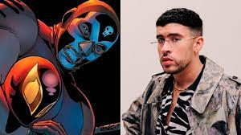

Ultimas Noticias
Bad Bunny hará la película de El Muerto, inspirada en el personaje de Marvel Comics. Sony Pictures Entertainment confirmó elproyecto hace unas semanas y los fans quedaron sorprendidos por este fichaje. Fue totalmente inesperado. Nadie esperaba que laestrella de la música, quien acaba de presentar su nuevo disco, fuera a protagonizar una película de superhéroes.

Bad Bunny estableció récords de venta con su nueva producción Un verano sin ti según Billboard. También el nuevo disco del artista urbano puertorriqueño hizo lo mismo en las plataformas digitales musicales de Spotify y Apple Music.
Según detallaron los representantes de Bad Bunny en un comunicado de prensa, su última producción de estudio debutó en el primer lugar en el listado de todos los géneros Billboard 200
/cloudfront-us-east-1.images.arcpublishing.com/artear/KBKPRFMEHBHZNDDHKVTYPGGRJA.JPG)